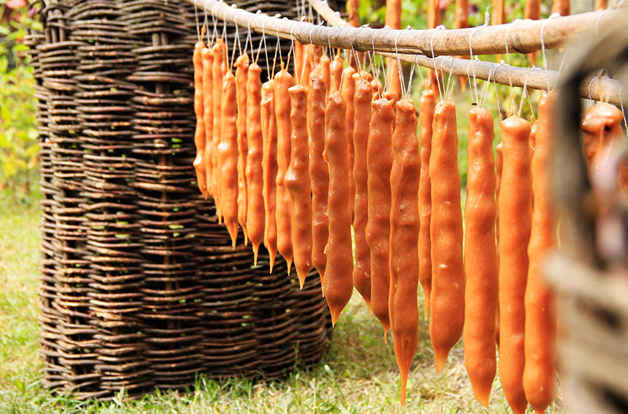

Churchkhela

Churchkhela is a traditional Georgian candle-shaped candy.
Ingredients
- Shell the walnuts. Add to a hot pan and heat on a low-medium heat for 2-3 minutes. Be careful not to burn them.
- Remove from the heat and allow to cool a little and then separate them into halves. Churchkhela can also be made with walnut quarters or eighths.
- Thread a needle with a 30-inch length of strong thread. With the flat side of the nuts facing up, thread 25 walnut halves onto the thread. Cut the thread from the needle and knot the ends. The walnut strands should be dried in the sun before the next stage of the process to prevent the growth of mold.
- Once the flour, sugar and badagi have been mixed with a spoon, use an electric blender to ensure that the mixture is absolutely smooth.
- Add 1 liter of badagi to a deep cast iron pot and gradually add the flour/sugar/badagi mixture.
- The resulting mixture is called tatara and its consistency.
- Keeping hold of one end of the thread, carefully place a strand of threaded nuts (walnuts or hazelnuts) into the tatara.
- Ensure that all of the nuts are coated with tatara.
- Remove the churchkhela from the tatara.
- Leave the churchkhela to dry in the sunshine for 3 to 4 days
Go to Main Page